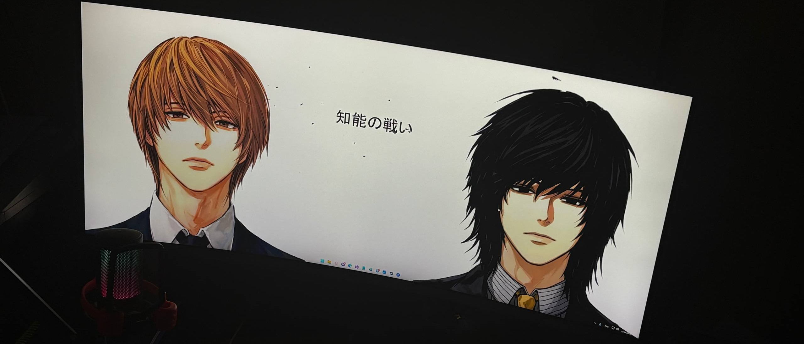
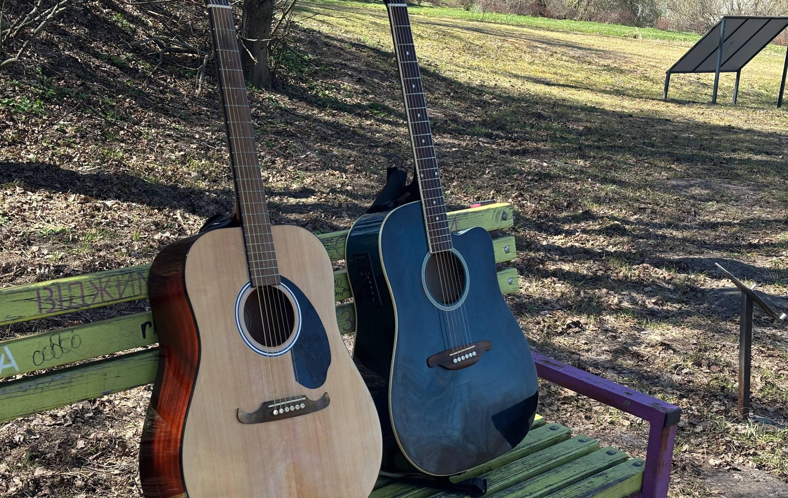
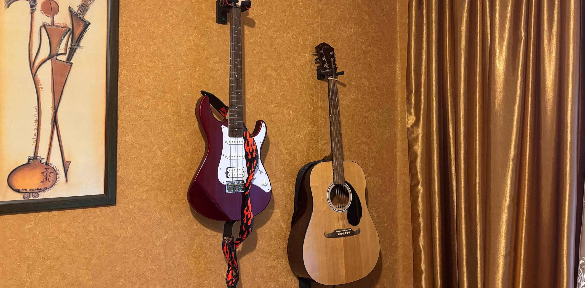
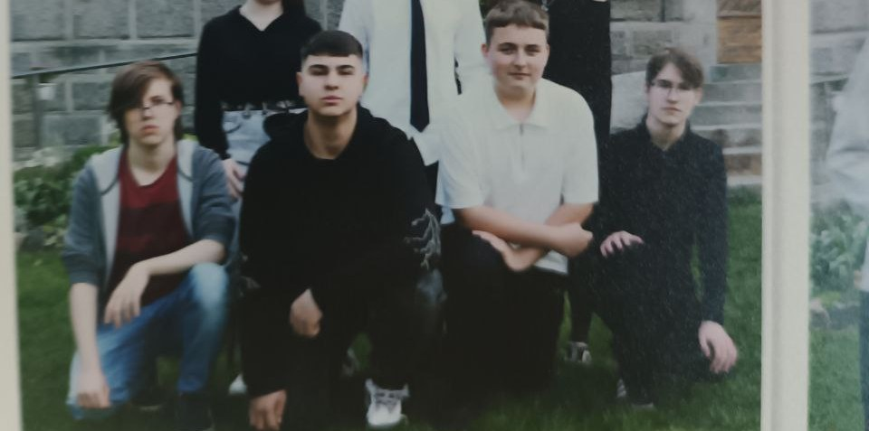

Мій перший комп’ютер мені подарували в 4 класі. Саме тоді я почав захоплюватися відеоіграми. Мене особливо цікавили такі ігри, як Metro 2033, Call of Duty, Far Cry, Assassin's Creed та Battlefield.

У 13 років я вступив до музичної школи на клас гітари. Але до цього я вже був самоуком і самостійно вчився грати на гітарі. Я поступово розвивав свої навички без викладача, просто практикуючись щодня.

Зараз у мене є три гітари: класична Yamaha C310, акустична Fender FA-125 та електрогітара Yamaha Pacifica 112.

Після закінчення школи я навчався у Фастівському ліцеї №1, де здобув середню освіту. Після цього я вступив до Фахового коледжу НУБіП у Боярці. На шкільному фото я стою зліва, а навпроти мене мій друг, який також займається музикою. Я би міг більше описати себе і свій досвід в других заняттях....